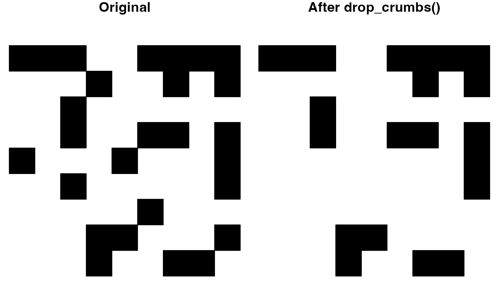
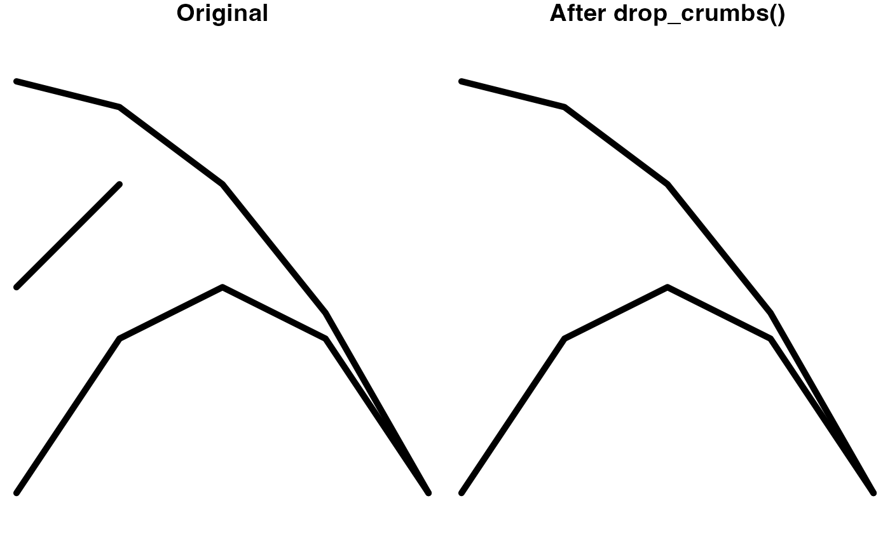

Remove polygons or line segments below a given area or length threshold.
drop_crumbs(x, threshold, drop_empty = TRUE)
| x | spatial features; lines or polygons from either the |
|---|---|
| threshold | an area or length threshold, below which features will be
removed. Provided either as a |
| drop_empty | logical; whether features with sizes below the given
threshold should be removed (the default) or kept as empty geometries. Note
that |
A spatial feature, with small pieces removed, in the same format as
the input data. If none of the features are larger than the threshold,
sf inputs will return a geometry set with zero features, and sp inputs
will return NULL.
For multipart features, the removal threshold is applied to the individual components. This means that, in some cases, an entire feature may be removed, while in other cases, only parts of the multipart feature will be removed.
# remove polygons smaller than 200km2 p <- jagged_polygons$geometry[7] area_thresh <- units::set_units(200, km^2) p_dropped <- drop_crumbs(p, threshold = area_thresh) # plot par(mar = c(0, 0, 1, 0), mfrow = c(1, 2)) plot(p, col = "black", main = "Original") if (length(p_dropped) > 0) { plot(p_dropped, col = "black", main = "After drop_crumbs()") }# remove lines less than 25 miles l <- jagged_lines$geometry[8] # note that any units can be used # conversion to units of projection happens automatically length_thresh <- units::set_units(25, miles) l_dropped <- drop_crumbs(l, threshold = length_thresh) # plot par(mar = c(0, 0, 1, 0), mfrow = c(1, 2)) plot(l, lwd = 5, main = "Original") if (length(l_dropped)) { plot(l_dropped, lwd = 5, main = "After drop_crumbs()") }